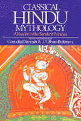

<body bgcolor="#FFFFFF" text="#000000" link="#0000FF" vlink="#CC0000" alink="#CC0000"><center><hr width="350" size="1" align="center" noshade>Fresh translations of the Mahapuranas, many available in English for the first time<hr width="350" size="1" align="center" noshade><p><a href="https://cdcshoppingcart.uchicago.edu/Cart/ChicagoBook.aspx?ISBN=9780877221173&&PRESS=temple" target="_top">Buy this book!</a> | <a href="https://cdcshoppingcart.uchicago.edu/Cart/Cart.aspx?PRESS=temple" target="_top">View Cart</a> | <a href="https://cdcshoppingcart.uchicago.edu/Cart/Cart.aspx?PRESS=temple" target="_top">Check Out</a></p><p></p></center><!--none//--><h1>Classical Hindu Mythology</h1>
<H2>A Reader in the Sanskrit Puranas</H2>
<h3>edited by Cornelia Dimmit, translated by J. A. B van Buitenen</h3>
<P>cloth 0-87722-117-0 $34.95, Jun 78, <FONT COLOR=#990033>Out of Print</FONT>
<br>paper 0-87722-122-7 $39.95, Jun 78, <FONT COLOR=#990033>Available</FONT>
<br>Electronic Book 1-43990-464-2 $39.95 <FONT COLOR=#990033>Out of Print</FONT>
<BR> 388 pp
6x9
</P><BLOCKQUOTE><I>"[P]rovides an important segment of world literature that has been virtually inaccessible."</I>
<br>&#151<b><i>Choice</i></b><I></I></BLOCKQUOTE>
<p>The Mahapuranas embody the received tradition of Hindu mythology. This anthology contains fresh translations of these myths, only a few of which have ever been available in English before, thus providing a rich new portion of Hindu mythology.
<p>The book is organized into six chapters. "Origins" contains myths relating to creation, time, and space. "Seers, Kings and Supernaturals" relates tales of rivers, trees, animals, demons, and men, particularly heroes and sages. Myths about the chief gods are dealt with in three separate chapters: "Krsna," "Visnu," and "Siva." The chapter "The Goddess" presents stories of the wives and lovers of the gods, as well as of Kali, the savage battle goddess.
<p>In their introductions, the editors provide a historical setting in which to discuss Hindu mythology as well as a full analysis of its basic sources. The many names given the gods and goddesses in the Sanskrit texts have been retained since their multiplicity is an essential part of the richness of the original. The editors have provided a thorough glossary to make these names accessible.
<BR>&nbsp;<h2>Excerpt</h2><P>Excerpt available at <a href="http://www.temple.edu/tempress">www.temple.edu/tempress</a></p>
<BR>&nbsp;<h2>Contents</h2><P>
<p>Preface
<br>The Puranas: An Introduction
<br>Origins
<br>Visnu
<br>Krsna
<br>Siva
<br>The Goddess
<br>Seers, Kings and Supernaturals
<br>Glossary
<br>Notes on Sources
<br>Bibliography of Sanskrit Puranas
<br>Index
</P><BR>&nbsp;<H2>About the Author(s)</H2>
<P><B>Cornelia Dimmitt</B> is Assistant Professor of Theology at Georgetown University and a Core Faculty Member of the Washington, D.C. Consortium Program in History of Religions.</P>
<P><p><b>J. A. B. van Buitenen</b> is Distinguished Service Professor of Sanskrit at the University of Chicago. He is currently translating the full Mahabharata, projected to run eight volumes.</P>
<BR><H2>Subject Categories</H2>
<p><A HREF="/tempress/religion.html" TARGET="_top">Religion</a>
<BR><A HREF="/tempress/literature.html" TARGET="_top">Literature and Drama</a>
<BR><A HREF="/tempress/asian.html" TARGET="_top">Asian Studies</a>
</p>
<p align="center"><a href="https://cdcshoppingcart.uchicago.edu/Cart/ChicagoBook.aspx?ISBN=9780877221173&&PRESS=temple" target="_top">Buy this book!</a> | <a href="https://cdcshoppingcart.uchicago.edu/Cart/Cart.aspx?PRESS=temple" target="_top">View Cart</a> | <a href="https://cdcshoppingcart.uchicago.edu/Cart/Cart.aspx?PRESS=temple" target="_top">Check Out</a></p><p><font face="Arial" size="1"><a href="copyright.html" onMouseOver="window.status='Web Copyright Policy';return true;" onMouseOut="window.status=''" title="Web Copyright Policy">&copy;</a> 2015 <a href="http://www.temple.edu" target="new" onMouseOver="window.status='Link to Temple University home page';return true;" onMouseOut="window.status=''" title="Link to Temple University home page">Temple University</a>. All Rights Reserved. http://www.temple.edu/tempress/titles/123_reg.html</font></p>